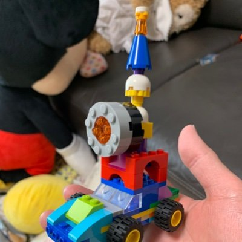

JAWS-UG Lightning Talk · ABOUT ME

たかぼー / takabo
@takabo12786375
·
GLOCALS
// 三足のわらじ
- 医療系 事業会社の クリエイティブ部門 責任者
- フリーランス エンジニアとして 案件参加
- 顧問先 の問題解決にあたる
立ち位置は アプリケーションエンジニア。 動かして覚える、 机上で語らず実地で確かめる、 がモットー。
// バックグラウンド
経歴は MBA + マーケティング が先、 エンジニアリングは後追い。
戦略 / 戦術 から 設計 / 実装 まで、 同じ案件で関わることが多い。
戦略 / 戦術 から 設計 / 実装 まで、 同じ案件で関わることが多い。
// これまで関わった領域
- — 製薬 / 医療機器企業 (病院検索システム + 各種 Web アプリ + SaaS プロダクト)
- — 官公庁 公共入札 (トレーサビリティ総合管理システム)
- — Google Business Profile 管理用 SaaS
- — 大手ネット系メディア
- — 金融機関 / 金融系パッケージソフトウェア (経費 / 決算 / 動不動産 / 有価証券)
- — 人材系ビジネス企業の テックリード
- — 合同会社 代表社員 約 8 年 (最大 5 名規模)
// 最近のフォーカス
LLMO / データ分析 周りをよく触ってます。
// 普段使い (GCP メイン)
Next.js
TypeScript
Supabase
Cloud Run
GCP
Node.js
Docker
// 好きな AWS サービス
Amplify
// 自己ツッコミ
JAWS-UG で LT してるけど、 メインクラウドは GCP やねん。 ……という、 ちょっと AWS も触ってる GCP メインのアプリエンジニアが、 「AWS の今ある選択肢」 を覗き見しながら殴ってる、 ぐらいの距離感です。
// JAWS-UG LT 履歴
// Find me